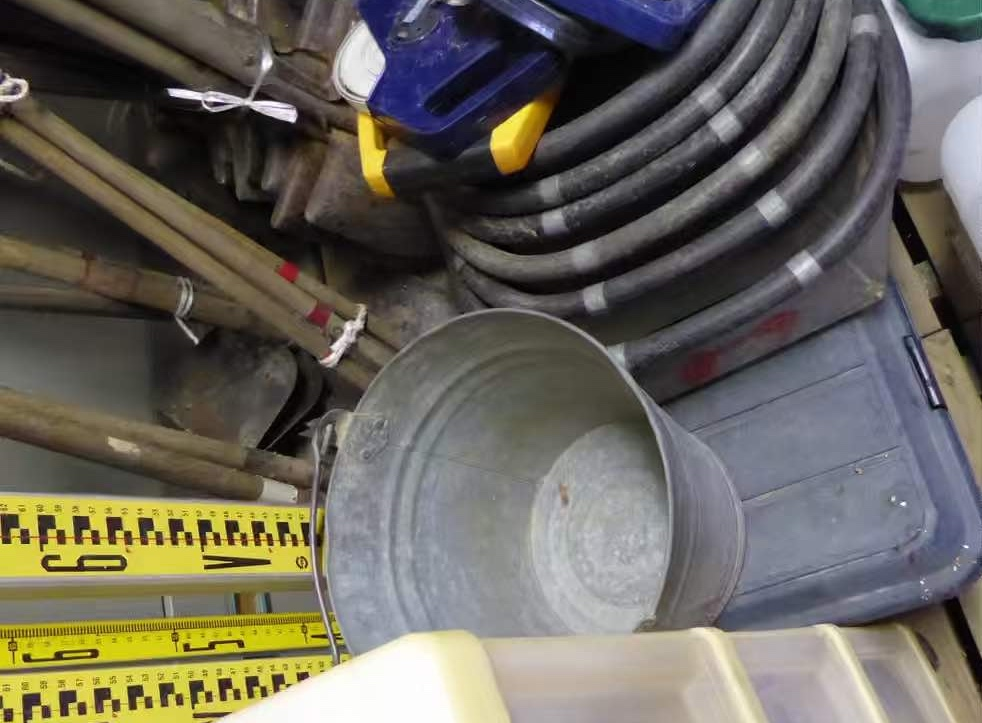

Digitale Archäologie (ver. 0.0.0.1)

Über das Buch
Anlass
Fundstücke, Ausgrabung, Wanderung durch unwegsames Gelände um Fundplätze zu beobachen – die Archäologie ist die denkbar dinglichste, analoge Wissenschaft überhaupt. Aber digitale Anwendungen sind in den letzten 50 Jahren zu immer wichtigeren Werkzeugen bei unserem Umgang mit diesen Dingen geworden, und ohne Kenntnis und Beherrschung wenigstens der Grundlagen solch digitaler Werkzeug in archäologischer oder denkmalpflegerischer Arbeit ist heute keine Forschung mehr möglich. Digitale Anwendungen haben die Archäologie verändert und sind in ständigem Umbruch begriffen; es gibt immer mehr und bessere Optionen. Da fällt es schwer, eine Übersicht zu behalten und auf aktuellem Stand zu bleiben. Dieses Buch soll Konstanten herausarbeiten, damit es leichter fällt, in Neuem das grundsätzlich Gültige wiederzuerkennen und sich ohne Umwege so weit anzupassen wie notwendig.
Versionen
- Begonnen September 2023, Outline.
Links und Zitierweise
Maria Shinoto. (2023). Digitale Archäologie - Werkzeuge und Konzepte im Wandel. [https://mariashinoto.github.io/digitialarchaeology.de/]. https://doi.org/10.5281/zenodo.8342717
Bibtex:
@book{maria_shinoto_2023_8342717,
author = {Maria Shinoto},
title = {{Digitale Archäologie -
Werkzeuge und Konzepte im Wandel}},
publisher = {Zenodo},
year = 2023,
month = sep,
doi = {https://doi.org/10.5281/zenodo.8342717},
url = {https://mariashinoto.github.com/digitialarchaeology.de}
}Über die Autorin
- Privatdozentin am Institut für Ur- und Frühgeschichte und Vorderasiatische Archäologie, Zentrum für Altertumswissenschaften, Universität Heidelberg.
- Korrespondierendes Mitglied am Deutschen Archäologischen Institut
- Gastprofessorin an der Beppu University, Japan
 https://orcid.org/0000-0001-6089-4526
https://orcid.org/0000-0001-6089-4526
- Webseiten:
- Arbeitsschwerpunkte:
- Japanische Archäologie
- Keramik
- Digitale Anwendungen, insbesondere Statistik und Klassifikation